现在
这一次的药，一屏看清。
“现在”页面显示现在要吃的药、还没标记的药和下一次。点一下“已服用”就完成了。大字、大按钮，无需注册。
为每天吃药的人和照护家人的人而做。
现在
“现在”页面显示现在要吃的药、还没标记的药和下一次。点一下“已服用”就完成了。大字、大按钮，无需注册。
提醒
提醒带有“已服用”和“推迟 10 分钟”按钮。选择提醒方式：普通、反复提醒（一直重复，直到您标记）或闹铃。
库存
数一数盒子里还剩多少，Pilulário 会显示什么时候吃完。“又买了”会把新买的一盒加到剩下的数量上。
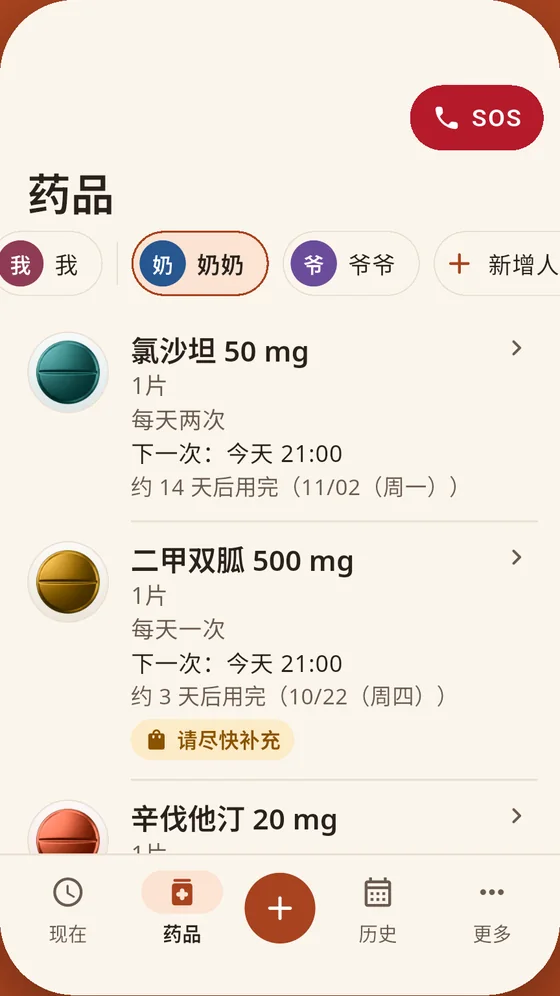
历史
按日、周、月查看：吃了什么、跳过了什么、由谁标记。标错了？可以撤销。
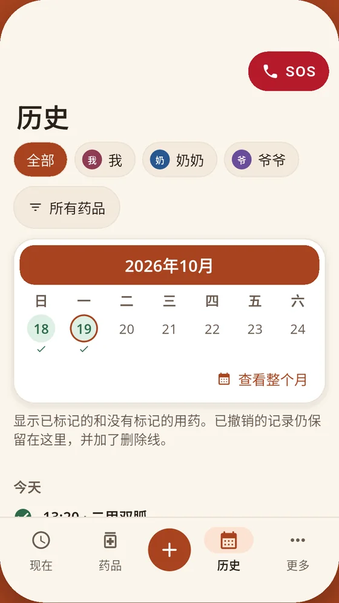
给照护者
每人有自己的颜色和照片、自己的药和提醒。记事、过敏和照护注意事项，给药的人一眼就能看到。
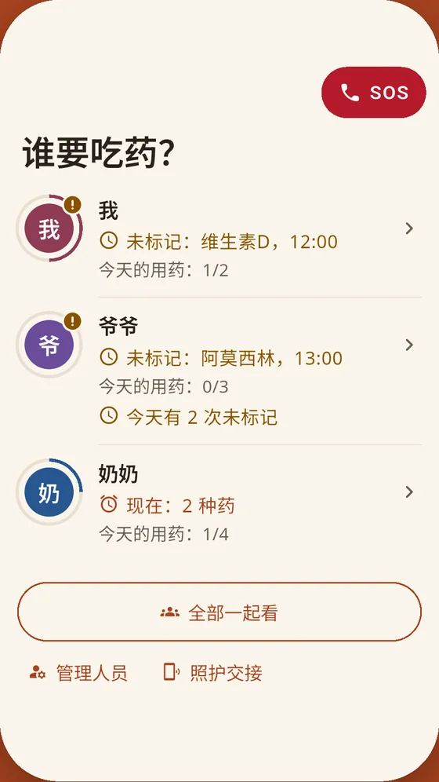
照护交接
要请别人照看？通过摄像头把药品交过去，不用联网，再收回给药记录。
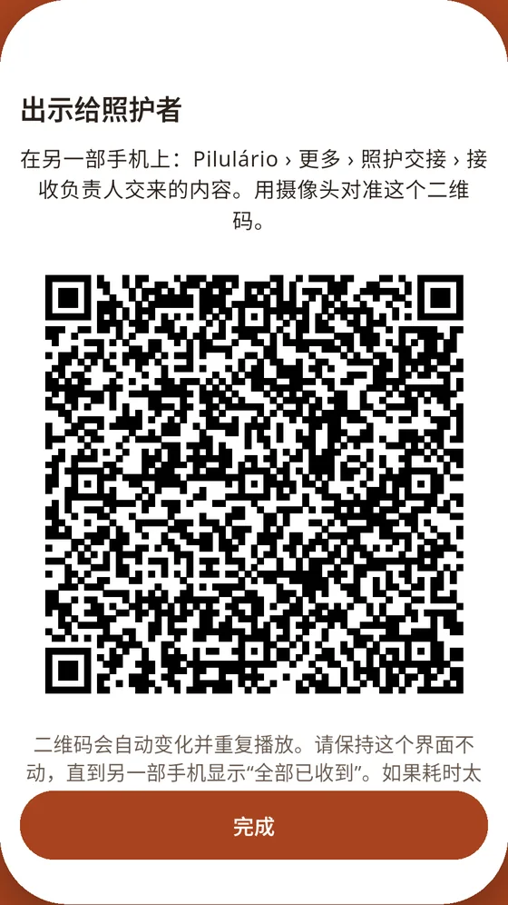
提醒状态
应用会检查手机是否允许提醒响起，并告诉您需要调整什么。SOS 按钮里有急救电话号码和照护者的电话。
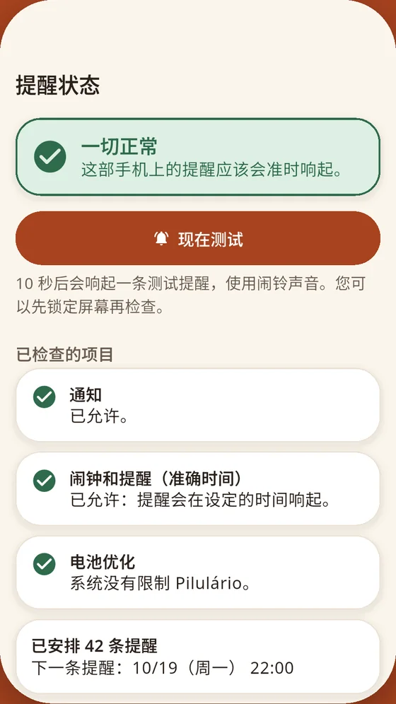
提醒、库存、历史和 SOS 都免费，药品数量不限。一次性购买“家人与照护者”，让照护多人更轻松。
应用的界面。
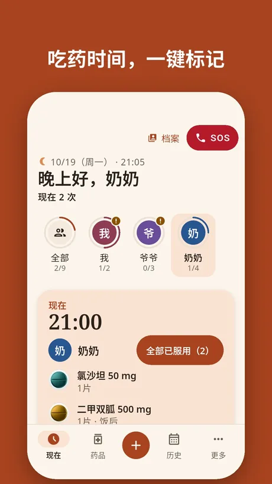
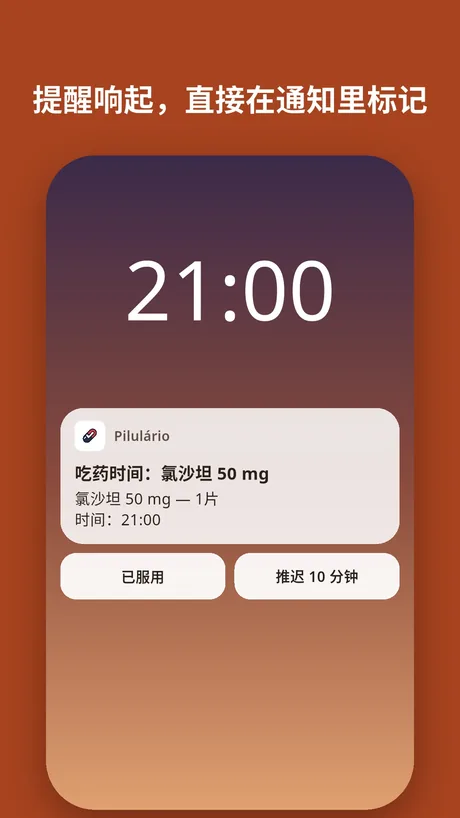
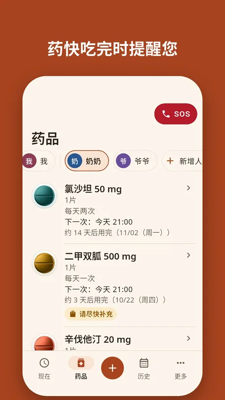
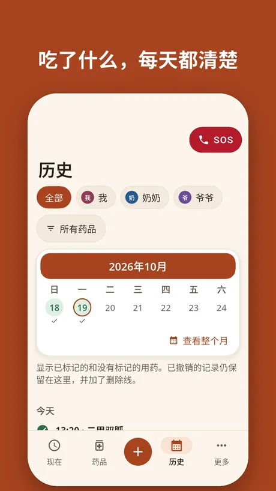
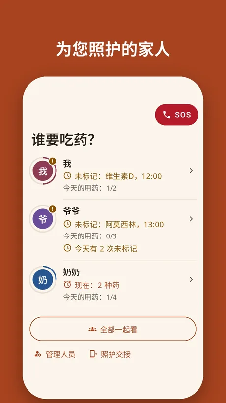
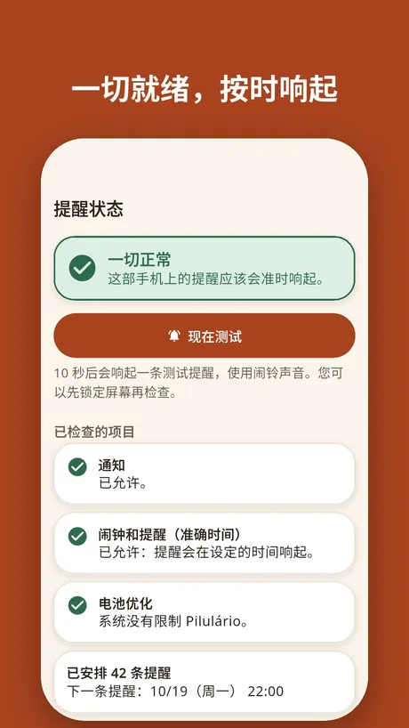
是的。闹钟、库存、历史和 SOS 都免费，药品数量不限。一次性购买“家人与照护者”可以增加多人、照护交接、记事和高级模式。没有订阅，没有广告。
能。应用不使用互联网：提醒、数据和照护交接在手机离线时都能用。只有购买需要经过应用商店。
不需要。没有注册。要把数据转到新手机，请把备份导出为文件。
打开“提醒状态”：应用会检查通知、闹钟和电池权限，并告诉您需要调整什么。还可以马上测试一次提醒。
不会。Pilulário 只是提醒工具：它不是医疗器械，不会建议药物、剂量或时间，也不能代替医生或药师的指导。